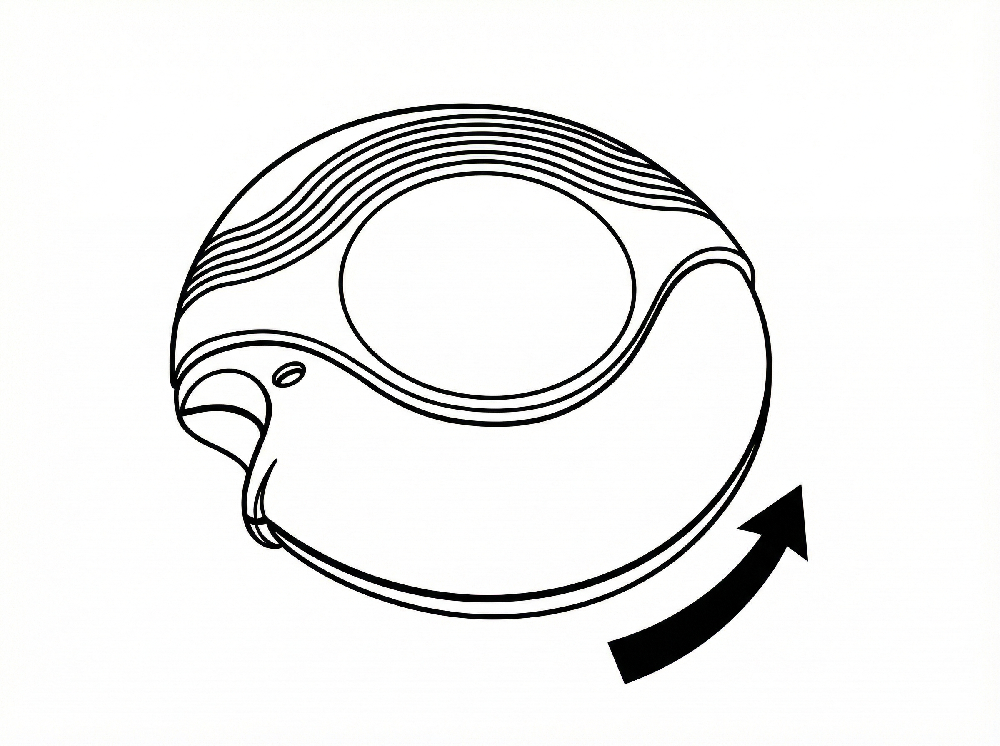
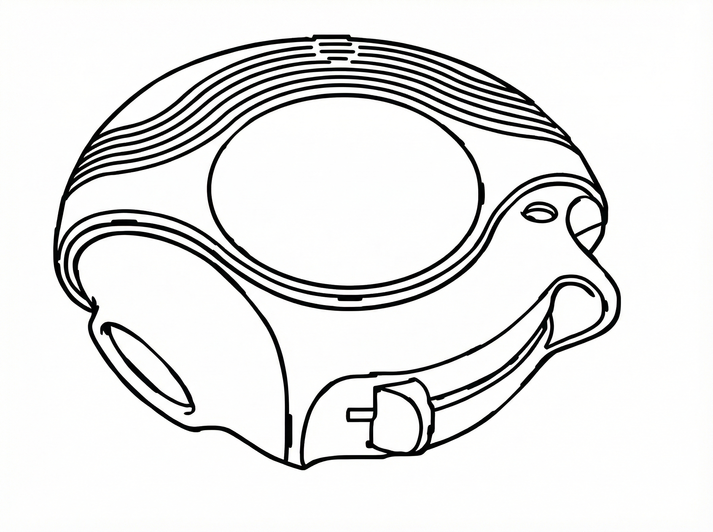
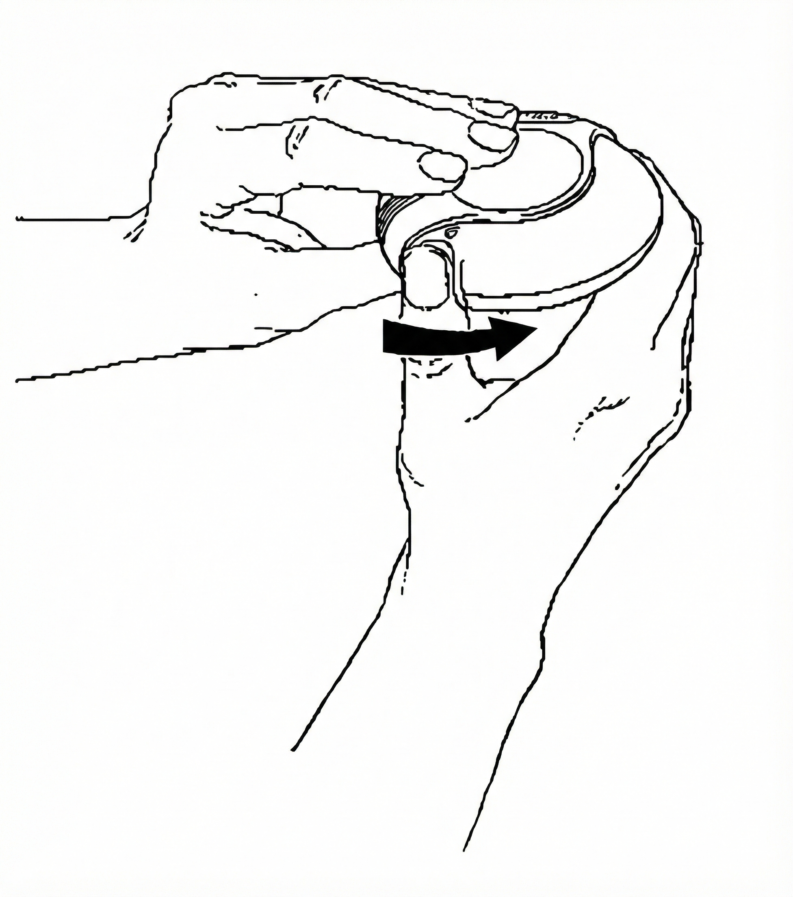
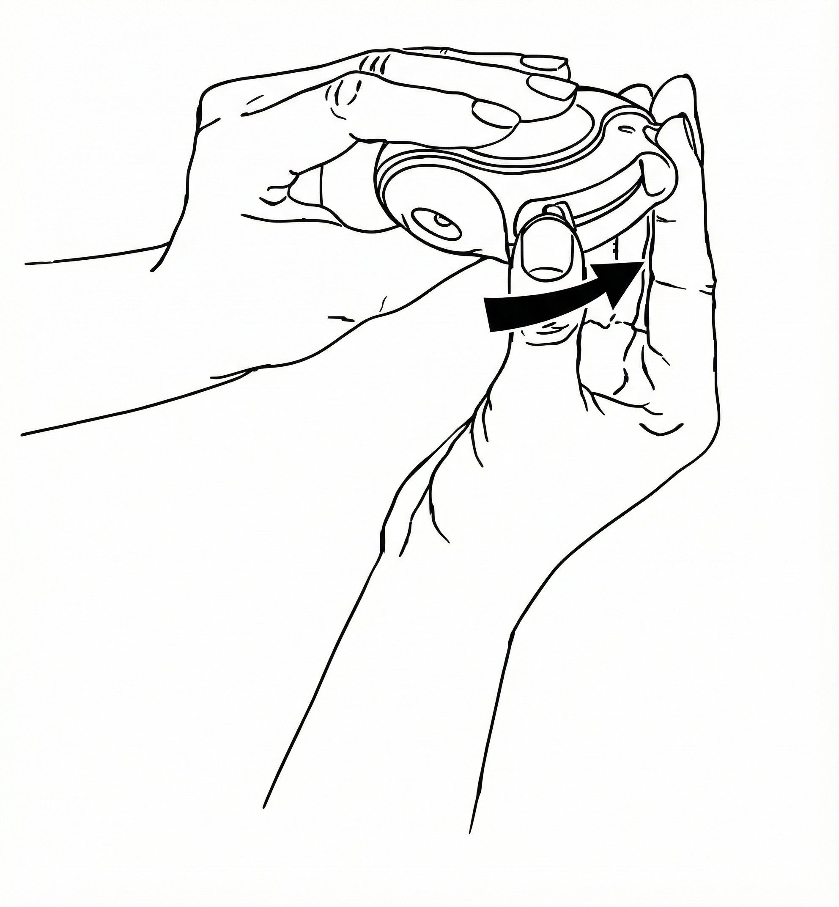
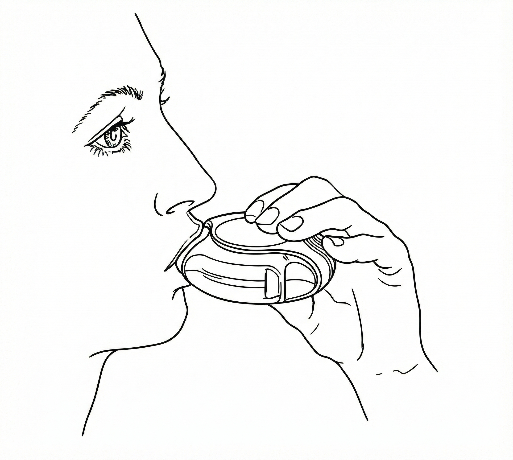
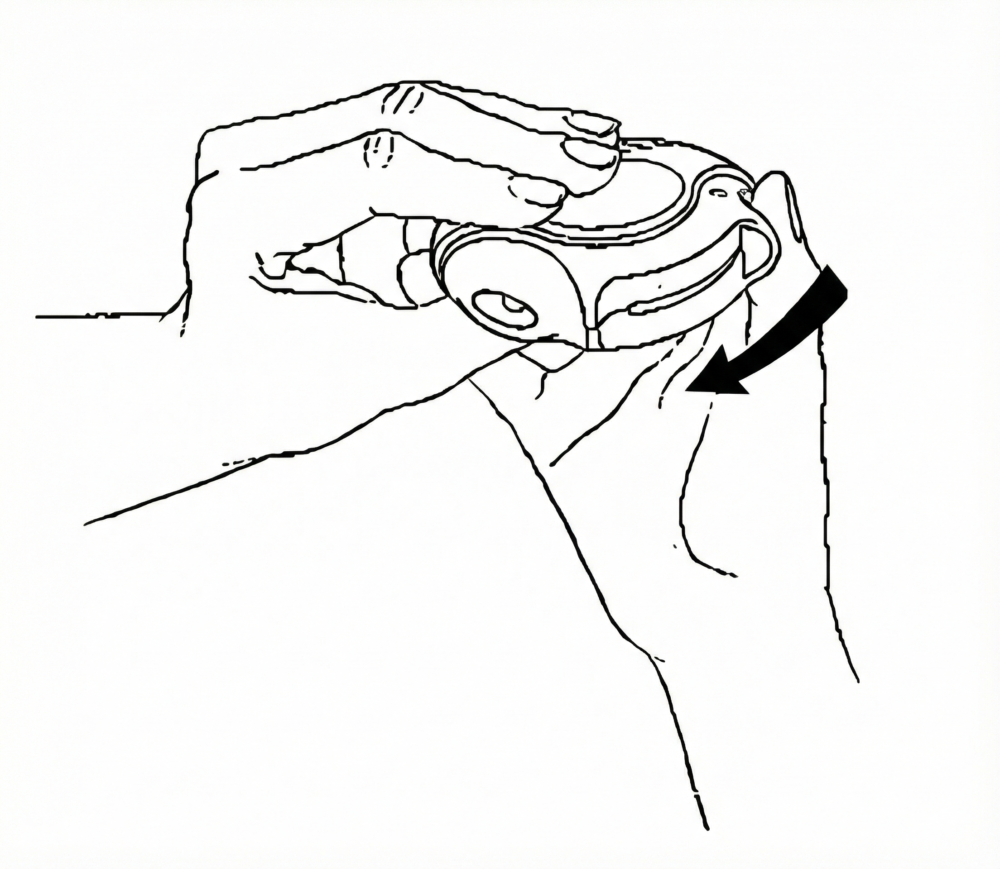

Diskus Kullanım Talimatı
Adım Adım Uygulama
KAPALI
Diskus’u kutusundan çıkardığınızda kapalı durumda olacaktır.

AÇIK
Kullanılmamış bir Diskus içinde ayrı ayrı korunmuş olarak toz halde 60 dozluk ilaç bulunur. Doz göstergesi, Diskus içinde kaç doz ilaç kaldığını gösterir.

Her doz tam olarak ölçülmüş olup hijyenik şartlara uygun olarak korunmaktadır. Bakıma veya yeniden doldurmaya gerek yoktur.
Diskus’un üst kısmındaki doz göstergesi kaç doz kaldığını gösterir. İlaç miktarı azaldığında sizi uyarmak üzere 5 - 0 arasındaki rakamlar kırmızı renkte yazılmıştır.
Diskus’u kullanmak kolaydır. İlacı alacağınız zaman yapacaklarınız aşağıdaki basamaklarda gösterilmiştir:
- Açma
- Kaydırma
- İçine Çekme
- Kapatma
- Ağzı Çalkalama
Diskus Nasıl Çalışır?
Hareket kolu itilince ağızlık içinde küçük bir delik açılır ve bir dozluk ilaç inhale edilmek için hazırdır. Diskus kapatılınca hareket kolu otomatik olarak ilk pozisyonuna döner ve bir sonraki kullanım için hazır hale gelir. Dış kapak, kullanılmadığı zamanlarda Diskus’u korur.
1. Açma – Diskus’u nasıl kullanmalısınız?
Diskus’u açmak için bir elinizle dış kapağı tutarken diğer elin baş parmağını baş parmak yerine koyunuz. Baş parmağınızı itebildiğiniz kadar, kendinizden uzağa itiniz.

2. Kaydırma
Diskus’u ağızlığı size dönük olacak şekilde tutunuz. Hareket kolunu bir “klik” sesi duyulana kadar kendinizden uzağa doğru itiniz. Diskus artık kullanıma hazırdır. Hareket kolu her geriye itilişinde inhalasyon için bir doz hazır hale gelir. Bu doz göstergesinde görülür. İlacı ziyan etmemek için hareket kolu ile oynamayınız.

3. İçine çekme
İlacı içinize çekmeden önce bu bölümü dikkatli bir şekilde okuyunuz.
- Diskus’u ağzınızdan uzak tutunuz. Nefesinizi rahatça yapabildiğiniz kadar dışarı veriniz.
Unutmayınız - asla Diskus’un içine nefes vermeyiniz. - Ağızlığı dudaklarınızın arasına alıp dişlerinizle hafifçe sıkın.
- Uzun ve derin nefes alınız - nefesi burnunuzdan değil, Diskus’un içinden alınız.
- Diskus’u ağzınızdan uzaklaştırınız.
- 10 saniye veya rahatça tutabildiğiniz kadar uzun bir süre nefesinizi tutunuz.
- Yavaşça nefes veriniz.

4. Kapatma
Diskus’u kapatmak için baş parmağınızı baş parmak yerine koyup geriye kendinize doğru sonuna kadar kaydırınız.
Diskus kapanınca bir klik sesi duyulur. Hareket kolu otomatik olarak eski yerine döner ve yeniden kurulur. Diskus yeniden kullanıma hazır hale gelmiştir.

Eğer iki inhalasyon almanız tavsiye edildiyse 1’den 4’e kadar olan basamakları tekrar etmelisiniz.
5. Ağzı çalkalama
Sonrasında, ağzınızı su ile çalkalayınız ve tükürünüz.
UNUTMAYINIZ!
- Diskus’u kuru tutunuz.
- Kullanılmadığı zaman kapalı tutunuz.
- Diskus’un içine asla nefes vermeyiniz.
- Hareket kolunu sadece ilacı almaya hazır olduğunuzda itiniz.
- Söylenen dozdan daha fazla almayınız.